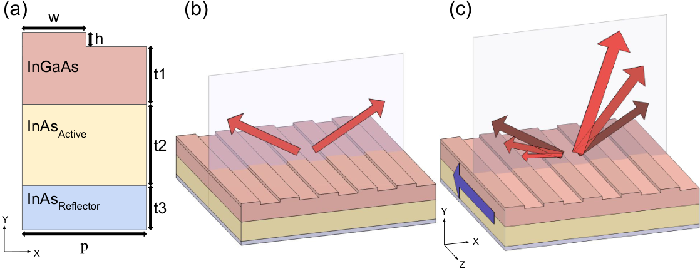
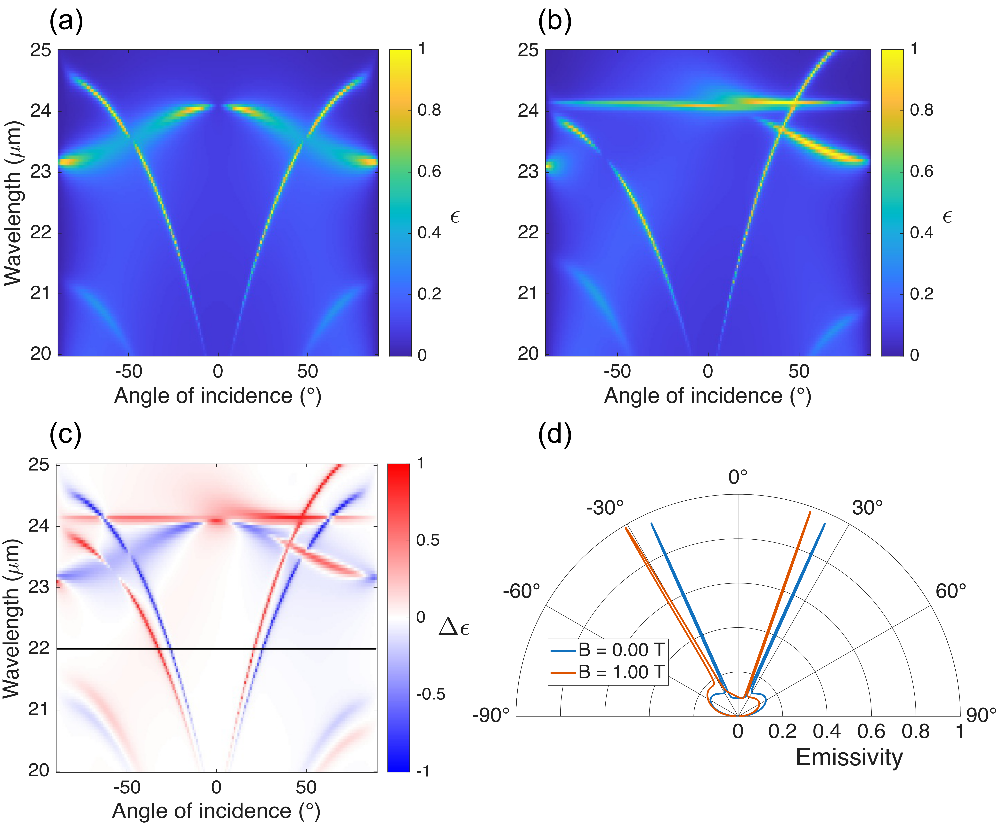
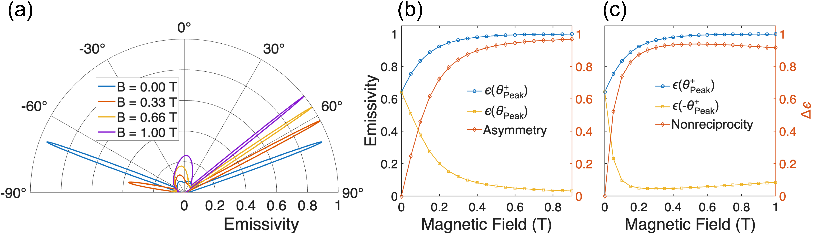
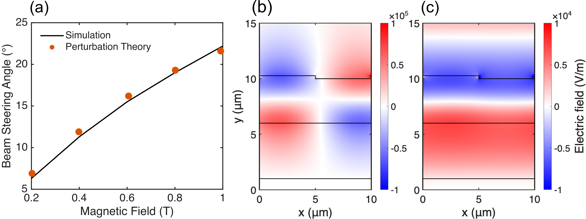

热辐射的非互易磁光光束偏转
摘要
传统热发射器遵循基尔霍夫热辐射定律，该定律将吸收率与发射率联系起来，并对一系列辐射能量技术和传感系统施加了根本限制。利用磁光材料可以克服这一约束，这类材料在施加磁场下表现出非互易热辐射。尽管磁光器件的光谱非互易性已在理论和实验上得到研究，但对热辐射方向的非互易控制受到的关注要少得多。在此，我们提出并通过数值模拟演示了热辐射的非互易光束偏转，其中外加磁场消除了处导模之间的简并，从而实现不对称且可调的方向性热辐射。我们重点介绍一种工作在m的III-V族半导体光子结构，该波长处激光源很少。该结构在mT下表现出之间大于的非互易性，在mT下表现出超过0.6的峰值发射率不对称性，并在与T之间实现的光束偏转。我们的方法提供了一种偏转热辐射光束的固态手段，为白炽光源的磁控光束扫描提供了一条潜在途径。
I 引言
热辐射是电磁辐射的一种基本形式，是许多自然过程和技术过程的核心。由于热辐射和吸收在能量转换 [26, 3]、成像 [7, 18, 31]、传感 [21]和辐射冷却 [25, 29]中的应用，控制其特性对许多技术具有重要意义。大量工作致力于利用表面等离激元 [32]、表面声子极化激元 [6]和介电常数近零（ENZ）模式 [8, 26]，以及通过光子晶体 [14]和基于超材料的架构 [34, 17]，来设计材料的光谱和方向发射率。此外，人们还探索了动态调制材料光谱和方向发射率的能力 [32, 16, 30, 22, 4, 9]。然而，这些使用互易材料和器件的技术受到基尔霍夫热辐射定律的约束。
基尔霍夫定律指出，对于特定波长的光、相对材料表面法线的角度以及偏振，材料的吸收率和发射率相等。这给一系列辐射能源技术以及传感系统的效率带来了根本性限制[10, 24, 23]。然而，在违反洛伦兹互易性的材料中，基尔霍夫定律可以被违背，包括表现出强磁光响应的材料，这使得在给定波长和入射角下发射率与吸收率可能不同。基于此，人们提出了一系列结构，包括磁光光子晶体[38]、光栅和导模共振结构[36, 37]，以及无需任何外场即可打破互易性的磁性外尔半金属[20, 12]。近期工作还主要通过向重掺杂 III-V 族半导体系统施加大的磁场（ 1 T）在实验上演示了非互易热发射[27, 28, 19, 35, 15]。在几乎所有这些工作中，目标都是在给定波长下解耦吸收和发射通道，因为这样做可能提高太阳能与热光伏能量转换技术的效率[5, 1, 10, 24, 23]。
相比之下，利用非互易性来控制热发射的方向在很大程度上仍未被探索。打破时间反演对称性并不只是在固定角度下解耦吸收率与发射率；它还可以消除以和传播的模式之间的简并。在互易系统中，洛伦兹互易性要求散射矩阵是对称的[11]，这约束色散关系满足。磁微扰打破这种对称性，使色散对于相反波矢沿相反方向发生位移。由于发射角由决定，这种位移就是峰值发射方向的改变，而该方向完全由外部磁场控制。因此，非互易性不仅提供了光谱控制，还开辟了一条对热辐射束进行磁控转向的途径：无需运动部件，也不受限制传统定向发射器的对称发射的束缚。我们这里所追求的正是非互易性的这种角度效应，而非光谱效应。
本文提出并通过数值模拟验证了一种用于光束偏转的磁光方法，该方法能够对热发射实现非互易且不对称的控制。具体而言，我们给出了一种全III-V族半导体结构，其非互易对比度大于，该对比度在之间于 mT下测得；在 mT下峰值发射率不对称度超过0.6；以及的光束偏转，该偏转在至 T下针对 m光实现。与传统各向同性且宽带的热发射不同，该结构的发射在方向和波长上均受到限制，并在之间呈强不对称。该器件工作在20–25 m范围内，该范围内现有激光源很少[33]。此外，调制所施加的磁场为利用白炽光源实现光束扫描提供了一条潜在途径。

II 结果
作为我们的模型系统，我们考虑一种由三层III-V族半导体构成的结构，如图 1(a) 所示。顶层厚度 为 4m（不包括光栅），为本征In0.53Ga0.47As，并且其表面刻蚀有光栅，该光栅提供将自由空间辐射耦合到结构导模所需的平面内动量。中间层为掺杂InAs，厚度 为 5m，是负责器件非互易行为的有源层。底层为重掺杂InAs，厚度 为 1m，并且由于高载流子密度，在该波长范围内充当反射器。光栅宽度 为 5m，高度 为 0.27m，结构周期 为 10m。各层的载流子浓度、有效电子质量和散射速率汇总于表 1。
有源层的掺杂浓度决定等离子体频率，从而决定ENZ波长。浓度为cm-3时，ENZ条件位于m。有源层的m厚度足以支持受限表面模，同时仍足够薄，使该模式在上界面处保持可观的场幅值。重掺杂底层的等离子体波长为m，因而在本文考虑的全部波段内呈金属性，所以它充当抑制透射的背反射器。本征In0.53Ga0.47As顶层在该范围内透明，其m厚度使共振波腹位于有源层附近。
非互易行为源于有源层的磁光响应，其中外加磁场在介电常数张量中引入非对角分量
| (1) |
其元素定义为
| (2) | ||||
| (3) | ||||
| (4) |
这里是散射率，是等离子体频率，是回旋频率，是自由载流子浓度，是外加磁场。当时，以及介电常数张量的非对角分量和均为零，因此材料是各向同性的，且色散满足。施加磁场后，由于自由载流子作回旋运动，介电常数张量获得反对称非对角分量，导致和变为非零，因此材料不再服从时间反演对称性。此时色散具有方向依赖性，使得，因此；又因为，可以得出结论：。
在全文里，我们取平行于光栅槽，沿表面平面内的周期方向，垂直于表面。外加磁场沿取向，平行于槽且垂直于入射面，即Voigt构型。在该几何结构中，非对角元和耦合横磁偏振光的面内和面外场分量，因此本文报道的所有发射率均针对TM偏振。横电偏振光的电场沿，因此仅对采样，且其不受磁场影响；在所有场强下，TE发射率关于对称，因此我们的分析不再进一步考虑它。

对于该结构，在比有源层的介电常数近零（ENZ）波长更长的波长处，随着增大，的发射率幅度增大并向法线方向偏移，而的发射率幅度减小并移向斜角方向，如图 1(b) 和 (c) 定性所示。图 2给出了器件在和下的模拟光谱与方向发射率。正如预期，在图 2(a) 中，由于没有外加磁场，因而没有非互易性，发射率关于法线完全对称。图 2(b) 中同样的对称性在施加T磁场时被打破。
除非互易模式外，在m的ENZ波长处，发射率变得近乎全向。这是ENZ模式平坦色散的结果：当时，共振频率变得几乎与无关，因此宽范围的面内波矢、并因而宽范围的发射角，在几乎相同的波长处满足共振条件。
图 2(a) 和 (b) 中关注的模式是导模共振（GMR），它起源于 m 附近的正入射，并随波长增大向更倾斜的角度移动。磁场使 GMR 色散变为非互易，导致 和 处的共振发生不同移动。由于 GMR 遵循色散关系 ，磁致共振频率变化伴随相应的面内波矢变化，从而使峰值发射角发生移动，产生光束偏转。最大的光束偏转出现在 GMR 色散相对平坦的区域。在该区域，共振波长的微小磁致移动会产生发射角的大幅变化。
图 2(c) 显示了图 2(a) 与 (b) 之间的差异，并最清晰地展示了整个模式的光束偏转。蓝线表示零外加磁场时模式所在的位置，红线表示施加 T 时模式移动到的位置。对于给定波长，从蓝模到红模（在法线同一侧）的角间隔即为所实现的光束偏转量。图 2(d) 展示了特定波长 m 处的光束偏转，如图 2(c) 中黑线所示。注意，由于磁场使模式在正角度下向更长波长移动、在负角度下向更短波长移动，峰向法线移动，而 峰远离法线。

虽然在 m 附近的波长处观察到光束偏转，但 和 处的发射率峰值仍大致相等。相比之下，对于大于有源层 ENZ 波长的波长，该结构同时表现出显著的光束偏转和发射率峰值之间的强非对称性。
图 3(a) 显示了在m处、若干外加磁场下的角发射率。随着磁场增大，处的发射峰向法线方向移动且幅度增大，而处的相应峰幅度显著减小并最终消失。这种不对称性用与处峰值的差来量化，如图 3(b) 所示，并在mT时超过0.6。在足够高的磁场下，一个独立的近法线发射峰会变得比峰更大。该近法线特征源于弱的 Fabry-Perot 共振[图 4(c)]，被排除在分析之外。我们仅追踪零磁场下存在的一对峰及其随磁场增大在角度和幅度上的演化。
在该波长处也存在显著的非互易性。我们将非互易性定义为处的峰值发射率与对应负角度处发射率之差，如图 3(c) 所示。由于，这等价于，因此直接量化了对基尔霍夫定律的违反。值得注意的是，在仅施加mT磁场时，非互易性大于0.5。
III 建模与讨论

光束偏转量如图 4(a) 所示。在外加磁场为T时，发射峰偏转。此外，仿真得到的偏转角与文献[2]中提出的微扰理论预测结果吻合良好，这使我们确信观测到的偏转源于磁场引起的模式色散修正。该微扰理论预测由外加磁场引起的共振频率偏移。其输入为未微扰模式的面内电场分量和面外磁场分量，以及相关材料性质。由此得到的频率偏移为
| (5) |
where
| (6) |
这里，是自由载流子偏振场的时间导数；分子中的积分是对磁光有源层进行的，分母为未微扰模式[2]的动能与势能之和。
为了将该微扰理论应用于固定波长下的光束偏转，我们对式（5）利用进行反演，以确定产生指定频率偏移所需的磁场：
| (7) |
随后，我们利用导模共振（GMR）的零场色散，将发射角的目标变化量与相应波长偏移联系起来，该偏移是将共振移至目标波长m所需的。将该转换为频移，再将其用于式（7）以计算所需磁场。对一系列偏转角重复此过程，可得到外加磁场与光束偏转角之间的关系，并将其与图 4(a)中的全波仿真进行比较。
由于光束偏转的实用价值取决于偏转范围相对于光束自身宽度的比值，我们还提取了发射率峰的角半高全宽（FWHM）。零场下，位于m处的峰FWHM为；在T下，随着模式向法向移动，偏转后的峰变窄至。因此，的偏转范围接近零场FWHM的四倍。我们注意到，线宽由模式的总损耗率决定，其贡献来自有源层的自由载流子散射率以及通过光栅的辐射泄漏。
此前非互易热辐射的实验演示依赖于超过T的磁场，这在实际中需要超导磁体或大型电磁铁，从而实际上将该效应限制在实验室[27, 28]内。相比之下，本文考虑的结构产生大于的发射率差，对应磁场为mT，该磁场很容易由小型永磁体或紧凑的空心线圈产生。调制和光束偏转原则上可通过小型电磁铁组件实现。由于偏转机制是磁性的而非机械的，调制速率由电磁铁而非发射器决定。对于电感为、电阻为的线圈，磁场以时间常数跟随驱动电流；对于产生mT的紧凑线圈，这对应约100 Hz的带宽。最后，我们注意到上述结果是在室温下计算的。升高温度会增加声子散射率，因而使增大，使共振展宽，并可能降低其峰值发射率。此外，载流子浓度的任何温度依赖性都可能使ENZ波长移动，因此需要进行考虑这一点的适当设计修改。
IV 结论
我们提出了一种全III-V族半导体结构，并通过仿真表明，该结构能够产生大于的非对称发射率差异，该差异介于（在mT下）与的光束偏转（对应施加T场）之间。这种行为由有源层的磁光响应实现，该响应打破洛伦兹互易性，使器件能够违反基尔霍夫热辐射定律，并产生强非对称的定向热发射。
与仍关于表面法线对称的传统定向热发射器不同，该器件的非对称性使得高发射率仅被限制在正角或负角。此外，由于偏转机制是磁性的而非机械式的，峰值热发射的方向原则上可以被调制，从而能够使用白炽光源实现光束扫描。该器件工作在–m波长范围，该范围内相干光源稀缺，现有方案体积庞大或需要低温工作，这凸显了其作为紧凑、可调谐定向远红外辐射源的潜力。我们强调，这种光源不能替代激光器，因为它是白炽发射体，因而在空间和时间上均不相干。最终，动态控制热发射方向和不对称性的能力，有望为红外传感、成像、自由空间光通信和辐射能技术带来新能力。
致谢。
This material was based upon work supported by the National Science Foundation under grant no. ECCS-2146577. D.C. acknowledges support of the Department of Defense National Defense Science and Engineering Graduate Fellowship.V 方法
我们使用 COMSOL Multiphysics 中的 Electromagnetic Waves, Frequency Domain 模块对器件进行了二维全波有限元仿真。我们在方向施加了 Floquet 边界条件。根据仿真，我们计算了入射 TM 偏振光的反射率，随后用其确定吸收率（，假设无透射）和发射率（，该关系适用于本几何结构）。各层的载流子浓度、有效电子质量和散射率总结于表 1中。有源层的材料参数取自参考文献 [38]，InGaAs 的折射率模型来自参考文献 [13]。
| Layer | 载流子浓度（cm-3） | (Hz) | |
|---|---|---|---|
| InAsactive | 0.033 | ||
| InAsreflector | 0.1413 |
References
- [1] (2018) Thermodynamic limits of energy harvesting from outgoing thermal radiation. Proceedings of the National Academy of Sciences 115 (16) (en). External Links: ISSN 0027-8424, 1091-6490, Link, Document Cited by: §I.
- [2] (2026) Nonreciprocal perturbation theory for near-complete violation of thermal emission. arxiv (en). Cited by: §III, §III.
- [3] (2020) Electrical power generation from moderate-temperature radiative thermal sources. Science 367 (6484), pp. 1341–1345. External Links: Document Cited by: §I.
- [4] (2019) Electrical modulation of degenerate semiconductor plasmonic interfaces. Journal of Applied Physics 126 (4), pp. 043101. External Links: ISSN 0021-8979, Document Cited by: §I.
- [5] (2012) Time-asymmetric photovoltaics. Nano Letters 12 (11), pp. 5985–5988 (en). External Links: ISSN 1530-6984, 1530-6992, Document Cited by: §I.
- [6] (2002) Coherent emission of light by thermal sources. Nature 416 (6876), pp. 61–64 (en). External Links: ISSN 0028-0836, 1476-4687, Document Cited by: §I.
- [7] (2016) High spatial resolution imaging of methane and other trace gases with the airborne hyperspectral thermal emission spectrometer (hytes). Atmospheric Measurement Techniques 9 (5), pp. 2393–2408 (en). External Links: ISSN 1867-8548, Document Cited by: §I.
- [8] (2023) Simultaneous control of spectral and directional emissivity with gradient epsilon-near-zero inas photonic structures. Advanced Materials 35 (39), pp. 2302956 (en). External Links: ISSN 1521-4095, Document Cited by: §I.
- [9] (2025) Thermally tunable angular selectivity of broadband directional thermal emission. Nano Letters 25 (19), pp. 8064–8071. External Links: ISSN 1530-6984, Document Cited by: §I.
- [10] (2022) Nonreciprocal solar thermophotovoltaics. Phys. Rev. Appl. 18, pp. 034083. External Links: Document, Link Cited by: §I.
- [11] (2013) What is — and what is not — an optical isolator. Nature Photonics 7 (8), pp. 579–582 (en). External Links: ISSN 1749-4885, 1749-4893, Document Cited by: §I.
- [12] (2018) Giant tunable nonreciprocity of light in weyl semimetals. Physical Review B 98 (19), pp. 195446 (en). External Links: ISSN 2469-9950, 2469-9969, Document Cited by: §I.
- [13] (2022) Determination of the far-infrared dielectric function of a thin ingaas layer using a detuned salisbury screen. Optical Materials Express 12 (7), pp. 2711–2723 (EN). External Links: ISSN 2159-3930, Document Cited by: §V.
- [14] (2003) Three-dimensional photonic-crystal emitter for thermal photovoltaic power generation. Applied Physics Letters 83 (2), pp. 380–382 (en). External Links: ISSN 0003-6951, 1077-3118, Document Cited by: §I.
- [15] (2023) Broadband mid-infrared non-reciprocal absorption using magnetized gradient epsilon-near-zero thin films. Nature Materials 22 (10), pp. 1196–1202 (en). External Links: ISSN 1476-1122, 1476-4660, Document Cited by: §I.
- [16] (2011) A graphene-based broadband optical modulator. Nature 474 (7349), pp. 64–67 (en). External Links: ISSN 0028-0836, 1476-4687, Document Cited by: §I.
- [17] (2011) Taming the blackbody with infrared metamaterials as selective thermal emitters. Physical Review Letters 107 (4), pp. 045901 (en). External Links: ISSN 0031-9007, 1079-7114, Document Cited by: §I.
- [18] (2018) Applications of the infrared thermography in the energy audit of buildings: a review. Renewable and Sustainable Energy Reviews 82, pp. 3077–3090 (en). External Links: ISSN 13640321, Document Cited by: §I.
- [19] (2025) High-temperature strong nonreciprocal thermal radiation from semiconductors. ACS Photonics 12 (5), pp. 2767–2774 (en). External Links: ISSN 2330-4022, 2330-4022, Document Cited by: §I.
- [20] (2020) Intrinsic nonreciprocal reflection and violation of kirchhoff’s law of radiation in planar type-i magnetic weyl semimetal surfaces. Physical Review B 102 (16), pp. 165417 (en). External Links: ISSN 2469-9950, 2469-9969, Document Cited by: §I.
- [21] (2016) Remote sensing of cirrus cloud microphysical properties using spectral measurements over the full range of their thermal emission. Journal of Geophysical Research: Atmospheres 121 (18) (en). External Links: ISSN 2169-897X, 2169-8996, Link, Document Cited by: §I.
- [22] (2018) Dynamic thermal emission control with inas-based plasmonic metasurfaces. Science Advances 4 (12), pp. eaat3163 (en). External Links: ISSN 2375-2548, Document Cited by: §I.
- [23] (2022) Nonreciprocal thermophotovoltaic systems. ACS Photonics 9 (12), pp. 3943–3949 (en). External Links: ISSN 2330-4022, 2330-4022, Document Cited by: §I.
- [24] (2022) Reaching the ultimate efficiency of solar energy harvesting with a nonreciprocal multijunction solar cell. Nano Letters 22 (1), pp. 448–452. External Links: ISSN 1530-6984, 1530-6992, Link, Document Cited by: §I.
- [25] (2014) Passive radiative cooling below ambient air temperature under direct sunlight. Nature 515 (7528), pp. 540–544 (en). External Links: ISSN 0028-0836, 1476-4687, Document Cited by: §I.
- [26] (2017) Thermophotovoltaics with spectral and angular selective doped-oxide thermal emitters. Optics Express 25 (20), pp. A880 (en). External Links: ISSN 1094-4087, Document Cited by: §I.
- [27] (2023) Direct observation of the violation of kirchhoff’s law of thermal radiation. Nature Photonics 17 (10), pp. 891–896 (en). External Links: ISSN 1749-4893, Document Cited by: §I, §III.
- [28] (2022) Nonreciprocal infrared absorption via resonant magneto-optical coupling to inas. Science Advances 8 (18), pp. eabm4308. External Links: Document Cited by: §I, §III.
- [29] (2020) Implementation of passive radiative cooling technology in buildings: a review. Buildings 10 (12), pp. 215 (en). External Links: ISSN 2075-5309, Document Cited by: §I.
- [30] (2013) Electrical modulation of emissivity. Applied Physics Letters 102 (8), pp. 081125 (en). External Links: ISSN 0003-6951, 1077-3118, Document Cited by: §I.
- [31] (2021) Computer vision: a reference guide. pp. 666–670. Note: Vollmer wrote the chpater, Katsushi Ikeuchi is the editor in chief of the book Cited by: §I.
- [32] (2017) Mid-infrared broadband absorber of full semiconductor epi-layers. Physics Letters A 381 (16), pp. 1439–1444 (en). External Links: ISSN 03759601, Document Cited by: §I.
- [33] (2019) An intense, few-cycle source in the long-wave infrared. Scientific Reports 9 (1), pp. 6002 (en). External Links: ISSN 2045-2322, Document Cited by: §I.
- [34] (2026) Broadband polarization-asymmetric directional thermal emission enabled by opposite phase-gradient metasurfaces. PhotoniX 7 (1), pp. 41 (en). External Links: ISSN 2662-1991, Document Cited by: §I.
- [35] (2025) Observation of strong nonreciprocal thermal emission. Physical Review Letters 135 (1), pp. 016901 (en). External Links: ISSN 0031-9007, 1079-7114, Document Cited by: §I.
- [36] (2019) Near-complete violation of kirchhoff’s law of thermal radiation with a 03 t magnetic field. Optics Letters 44 (17), pp. 4203 (en). External Links: ISSN 0146-9592, 1539-4794, Document Cited by: §I.
- [37] (2021) Nonreciprocal thermal emitters using metasurfaces with multiple diffraction channels. Physical Review Applied 16 (6), pp. 064001 (en). External Links: ISSN 2331-7019, Document Cited by: §I.
- [38] (2014) Near-complete violation of detailed balance in thermal radiation. Physical Review B 90 (22), pp. 220301. External Links: Document Cited by: §I, §V.